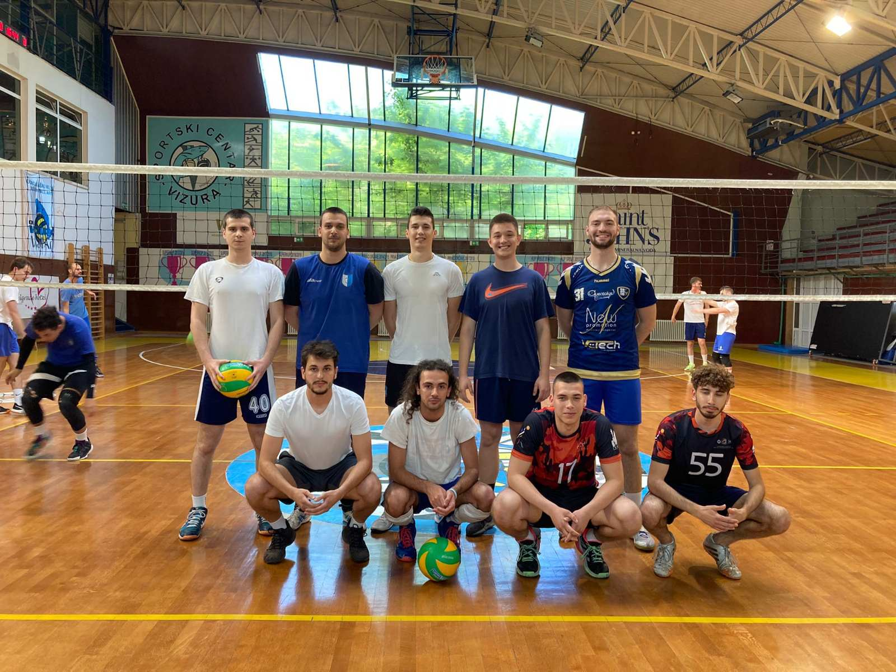

Odbojkaši FON-a učestvovali na EUROIJADI u Beogradu

Naši odbojkaši su učestvovali na međunarodnom turniru EUROIJADA koji se
održao u Beogradu od 12-14. novembra u Beogradu.
Nažalost, u oslabljenom sastavu, svoje učešće su završili u grupnoj
fazi.
Ekipa se sada okreće obavezama u studenskoj ligi i kupu.
Studentska liga za 2022/23 je zvanično počela!
Naši odbojkaši, posle sjajne igre prošle godine i plasmana u
četvrtfinale, ove godine ciljaju i još veći plasman.
Prema rečima kapitena Vukosavljevića, spoj iskustva i mladosti dovešće
FON do borbe za top 4 lige!
Da bi igrač bio validno registrovan za ligu, potrebno je da obavi
sledeće:
- Poseduje/obavi lekarski pregled ne stariji od 6 meseci
- Ima važeći indeks sa upisanim zimskim semestrom
- Popuni prijavu na sajtu USSB
- Ponese sa sobom indeks ili bilo koji lični dokument na utakmicu